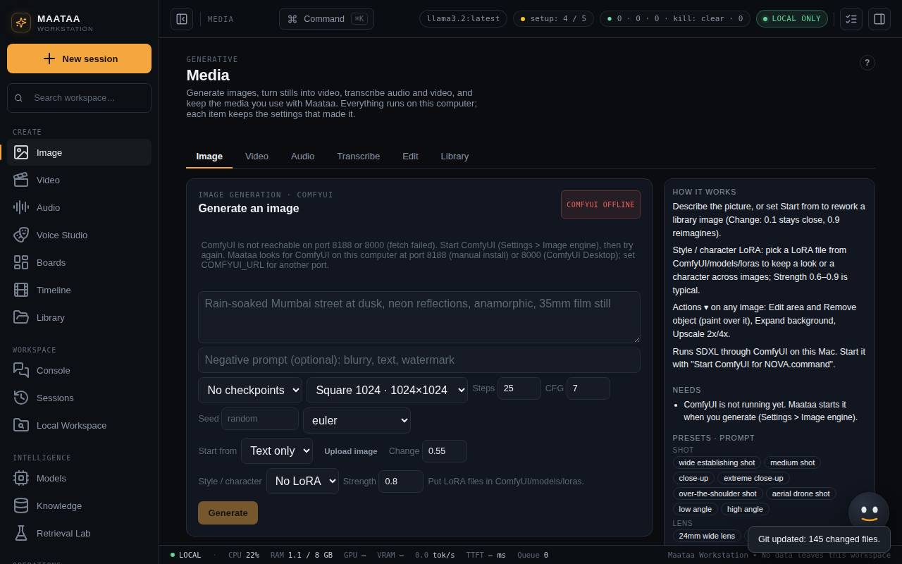

Images
Generate and change images on this computer with ComfyUI, keep a character consistent with a LoRA, and edit, expand or upscale any picture.
Everything in Media runs on your computer, and every item keeps the settings that made it (its recipe). Tabs along the top separate Image, Video, Audio, Transcribe, Edit and Library; the panel on the right explains the current tab, lists anything still to install, offers prompt presets and shows that tab's recent jobs with Cancel.

Set up ComfyUI
- Double-click Install ComfyUI for NOVA.command in the brahmini folder. It installs ComfyUI in
~/ComfyUIand the SDXL base checkpoint (about 13 GB). - Start it with Start ComfyUI for NOVA.command whenever you want to make images.
- NOVA finds ComfyUI on port 8188 (manual install) or 8000 (ComfyUI Desktop). Set
COMFYUI_URLfor another local port. Only local addresses are accepted.
Until ComfyUI is running, the Image tab shows COMFYUI OFFLINE and what to start.
Generate an image
- Describe the picture. Click preset chips (shot size, lens, light, style) to add them.
- Optionally add a negative prompt (things to avoid).
- Choose the checkpoint, size, steps, CFG, seed and sampler, then Generate.
Each image is saved with its prompt, negative prompt, checkpoint and seed. Reuse settings loads them back. While ComfyUI works, the Tensor view opens at the bottom right and shows each denoising step; see Boards, Timeline and Library.
Start from another image
Set Start from to a library image, or Upload image, describe the change, and set Change: 0.1 stays close to the original, 0.9 reimagines it. The source is scaled to about one megapixel first.
Keep a style or character with a LoRA
Style / character picks a LoRA file from ComfyUI/models/loras (restart ComfyUI after adding one); Strength 0.6–0.9 is typical. It is used for text to image, image to image, Edit area, Remove object and Expand, and recorded in each recipe. A LoRA trained on one character is the most reliable way to keep that character the same across shots. Training your own LoRA is not built in yet.
Change an existing image
Every library card has Actions ▾. The original is never changed; each action makes a new item.
| Action | What it does |
|---|---|
| Edit area… | Paint over an area and describe what should be there. Change 0.3 stays close, 1 repaints fully. Only painted pixels change. |
| Remove object… | Paint over something and NOVA fills it with matching background. |
| Expand background… | Puts the picture on a bigger frame (16:9, 2.39:1, 9:16, more room on every side) and paints the new area to match. |
| Upscale… | Makes a 2× or 4× copy. With an upscale model (double-click Add upscale model.command, about 64 MB) it adds real detail; otherwise it is a high-quality resize. Limited to 8,192 pixels on the long side. |
| Image to image, Attach to chat, Animate, Filters | Start from this picture elsewhere |
Filters
Filters on any item (or the Edit tab) applies looks (black & white, warm, cool, teal & orange, vintage, high contrast, faded film), film grain, vignette, crops (16:9, 2.39:1, 4:3, 1:1, 4:5, 9:16) and resizing. The result is a new item with its settings in the recipe.